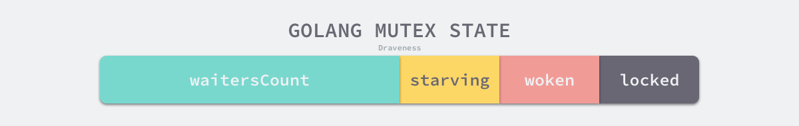

Ch04-GoLang 之 lock
October 7, 2024
GoLang 之 lock
Mutex #
基本结构 #
type Mutex struct {
state int32
sema uint32
}
func (m *Mutex) Lock()
func (m *Mutex) Unlock()
互斥锁的状态比较复杂，如下图所示

- mutexLocked：表示互斥锁的锁定状态；
- mutexWoken：表示从正常模式被从唤醒；
- mutexStarving：当前的互斥锁进入饥饿状态；
- waitersCount：当前互斥锁上等待的 Goroutine 个数
加锁和释放锁 #
func (m *Mutex) Lock() {
if atomic.CompareAndSwapInt32(&m.state, 0, mutexLocked) {
return
}
m.lockSlow()
}
func (m *Mutex) Unlock() {
new := atomic.AddInt32(&m.state, -mutexLocked)
if new != 0 {
m.unlockSlow(new)
}
}
Mutex 的 Lock 过程比较复杂，目前使用的新版本中，它涉及自旋、信号量以及调度等概念：
如果 Mutex 处于初始化状态，会通过置位 mutexLocked 加锁； 如果 Mutex 处于 mutexLocked 状态并且在正常模式下工作，会进入自旋； 如果当前 goroutine 等待锁的时间超过了 1ms，Mutex 就会切换到饥饿模式； Mutex 在正常情况下会将尝试获取锁的 goroutine 切换至休眠状态，等待锁的持有者唤醒； 如果当前 goroutine 是 Mutex 上的最后一个等待的协程或者等待的时间小于 1ms，那么它会将 Mutex 切换回正常模式；
Mutex 的 Unlock 过程与之相比就比较简单，其代码行数不多、逻辑清晰，也比较容易理解：
当 Mutex 已经被解锁时，调用 Unlock 会直接抛出异常； 当 Mutex 处于饥饿模式时，将锁的所有权交给队列中的下一个等待者，等待者会负责设置 mutexLocked 标志位； 当 Mutex 处于正常模式时，如果没有 goroutine 等待锁的释放或者已经有被唤醒的 goroutine 获得了锁，会直接返回
饥饿模式和正常模式 #
Mutex 有两种操作模式 正常模式，饥饿模式。
正常模式下，goroutine 都是进入先入先出到等待队列中，被唤醒的 goroutine 不会直接拿到锁，而是和新来的 goroutine 就行竞争。但是新来的 goroutine 有先天的优势拿到锁，因为他们正在 CPU中运行。所以高并发下，被唤醒的 goroutine 可能拿不到锁，这是他就会被插入到队列的前面，此时如果 goroutine 获取不到锁的时间超过了设定的阈值 1 ms，那么此时 Mutex 就会进入到饥饿模式。
饥饿模式下， Mutex 的拥有者将直接把锁交给队列最前面的 goroutine，新来的 goroutine 会加入到等待队列的尾部。
如果拥有锁的 goroutine 发现下述两种情况，会把 Mutex 转换成正常模式：
- 此时新的 goroutine 的等待时间小于 1ms
- 此 goroutine 已经是队列中的最后一个了，没有其它的等待锁的 goroutine 了
RWMutex #
基本结构 #
type RWMutex struct {
w Mutex
writerSem uint32
readerSem uint32
readerCount int32
readerWait int32
}
- w 复用互斥锁提供的能力
- writerSem 和 readerSem 分别用于写等待读和读等待写
- readerCount 存储了当前正在执行的读操作数量
- readerWait 表示当写操作被阻塞时等待的读操作个数